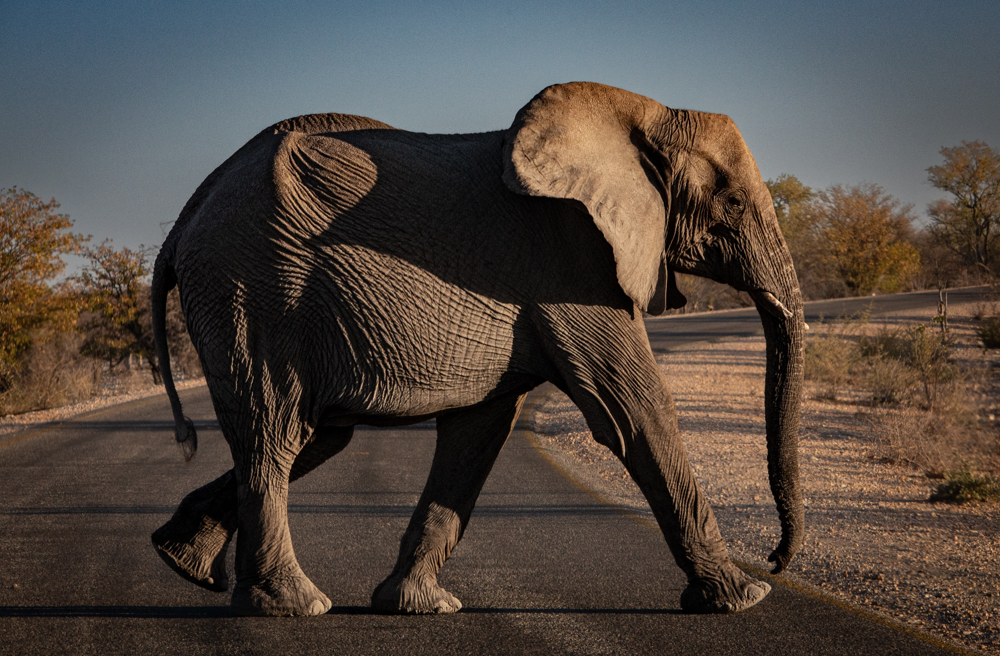

Animals Introduction
-
Elephant
Elephants are the largest land mammals on earth and have distinctly massive bodies, large ears, and long trunks. They use their trunks to pick up objects, trumpet warnings, greet other elephants, or suck up water for drinking or bathing, among other uses. Both male and female African elephants grow tusks and each individual can either be left- or right-tusked, and the one they use more is usually smaller because of wear and tear.
Read More -
Polar bear
Polar bears are the largest carnivorous land mammals on Earth. They are about seven to eight feet long, measured from the nose to the tip of their very short tail. Male polar bears are much larger than the females. A large male can weigh more than 1,700 pounds, while a large female is about half that size (up to 1,000 pounds). Bears can weigh about 50 percent more after a successful hunting season than they do at the start of the next; most of this additional weight is accumulated fat.
Read More -
Bull

Bulls are much more muscular than cows, with thicker bones, larger feet, a very muscular neck, and a large, bony head with protective ridges over the eyes. These features assist bulls in fighting for domination over a herd, giving the winner superior access to cows for reproduction. The hair is generally shorter on the body, but on the neck and head there is often a "mane" of curlier, wooly hair.
Read More -
Squirrel
Squirrels present their own unique set of dangers when it comes to their interaction with humans as they can become aggressive when they feel frightened or threatened. While people should be cautious year-round, squirrels tend to be more of an issue in fall and winter as the weather becomes colder and they look for a place to stay warm.
Read More -
Eagle
Eagle, any of many large, heavy-beaked, big-footed birds of prey belonging to the family Accipitridae (order Accipitriformes). In general, an eagle is any bird of prey more powerful than a buteo. An eagle may resemble a vulture in build and flight characteristics but has a fully feathered (often crested) head and strong feet equipped with great curved talons. A further difference is in foraging habits: eagles subsist mainly on live prey.
Read More -
French Bulldog

The one-of-a-kind French Bulldog, with his large bat ears and even disposition, is one of the world's most popular small-dog breeds, especially among city dwellers. The Frenchie is playful, alert, adaptable, and completely irresistible. The French Bulldog resembles a Bulldog in miniature, except for the large, erect 'bat ears' that are the breed's trademark feature. The head is large and square, with heavy wrinkles rolled above the extremely short nose.
Read More -
Shiba Inu
Shiba Inu, breed of dog that originated in Japan some 2,300 years ago for small game and ground bird hunting. A muscular dog, it stands 13.5 to 16.5 inches (34 to 42 cm) tall at the shoulders and weighs 17 to 23 pounds (7.5 to 10.5 kg). The Shiba Inu is known for its confidence, perkiness, and triangularly set eyes. Its coat is short, plush, and straight, with a stiff outer coat, and may be white mixed with red, ginger, tan, or light black.
Read More -
Cervus nippon
Cervus nippon is a small to medium-sized deer with a head and body length of approximately 950-1,800 mm, a tail length of about 75-130 mm, and a height (measured at the shoulder) of 640-1090 mm (Feldhamer 1980, Nowak 1991). On average, males grow until they are 7-10 years old, while females stop growing at age 4-6 years (Nowak 1991). This results in the sexual dimorphism of males averaging 8.7% larger than females (Feldhamer 1980 and Nowak 1991).
Read More -
Domestic Shorthair
Domestic shorthairs range in appearance, without one color or pattern being predominant. Some have spots, some have patches and others may have a different colored tail than the rest of their body. Their smooth, shiny coats come in a variety of colors: brown, orange, black, white, and so on. Their eyes can be hazel, blue, green or gold.
Read More -
Pixiebob
The Ragdoll is a breed of cat with a distinct colorpoint coat and blue eyes. Its morphology is large and weighty, and it has a semi-long and silky soft coat. American breeder Ann Baker developed Ragdolls in the 1960s. They are best known for their docile, placid temperament and affectionate nature.
Read More -
Dragon Li
The Dragon Li(Li-Hua) displays a unique golden-brown, broken-mackerel (also known as broken-striped) tabby pattern; distinctive ear tipping; large round almond shaped luminescent yellow/green eyes; and a strong full bodied stature reminiscent of its wild nature.
Read More -
Selkirk Rex
Selkirk Rex displays a cobby, solid build, strong legs and giant fuzzy paws. This is a heavy-boned and muscular breed. Most are born with curls, but a few are born with straight hair. In some, the curls develop and become more prominent when the Selkirk Rex becomes an adult.
Read More